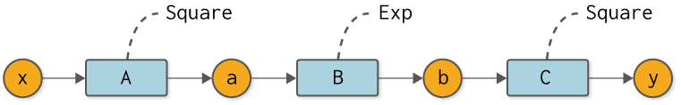
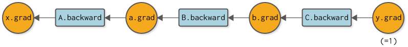

The code implemented in the previous step
[1]:
import numpy as np
class Variable:
def __init__(self, data):
self.data = data
class Function:
def __call__(self, input):
x = input.data
y = self.forward(x)
output = Variable(y)
self.input = input
self.output = output
return output
def forward(self, x):
raise NotImplementedError()
class Square(Function):
def forward(self, x):
return x ** 2
class Exp(Function):
def forward(self, x):
return np.exp(x)
def numerical_diff(f, x, eps=1e-4):
x0 = Variable(x.data - eps)
x1 = Variable(x.data + eps)
y0 = f(x0)
y1 = f(x1)
return (y1.data - y0.data) / (2 * eps)
Step 6: Back-propagation by hand.¶
In the previous step, we explained how backpropagation works. In this step, we will extend the previous Variable and Function classes to implement the back-propagation to get the derivative. First, let’s take a look at the Variable class.
6.1 Additional implementation of the Variable class¶
Now, let’s implement the Variable class for backpropagation. To do so, we extend it so that it has a corresponding differentiated value (grad) in addition to the normal value (data).
[2]:
class Variable:
def __init__(self, data):
self.data = data
self.grad = None # Added code
Now we have a new instance variable called grad, as shown above. We assume that the instance variables data and grad are both multi-dimensional arrays (ndarray) of NumPy. Also, grad is initialized with None and set to its value when the derivative is actually computed by back-propagation.
WARNING
Derivatives on multiple variables, such as vectors and matrices, are called gradients. For this reason, the Variable class has a variable called grad, which is short for gradient.
6.2 Additional implementation of Function class¶
This is followed by the Function class. In the previous steps, the Function class had the ability to forward-propagate (the forward method) with normal computation. In addition to this, we are adding two new features
The backward propagation feature (the
backwardmethod) for calculating the derivative.Ability to keep the input
Variableinstance when calling aforwardmethod.
The following code implements these two points.
[3]:
class Function:
def __call__(self, input):
x = input.data
y = self.forward(x)
output = Variable(y)
self.input = input # Added code
return output
def forward(self, x):
raise NotImplementedError()
def backward(self, gy): # Added code
raise NotImplementedError() # Added code
As shown in the code above, the __call__ method sets the input input to an instance variable. Now, when the backward method is called, we can use the Variable instance entered into the function as self.input.
6.3 Additional implementation of Square and Exp classes¶
We then implement the backward propagation of a specific function (backward). Let’s start with the Square class that computes the squares. This can be implemented as follows, since the derivative of \(y=x^2\) is \(\frac{dy}{dx} = 2x\).
[4]:
class Square(Function):
def forward(self, x):
y = x ** 2
return y
def backward(self, gy):
x = self.input.data
gx = 2 * x * gy
return gx
Add the backward method for backpropagation, as described above. The argument gy of this method is an instance of ndarray, which is passed the derivative from the output side. The result of the backward method is the value obtained by multiplying the derivative passed in the argument by the derivative of \(y=x^2\). The returned result will be propagated further in the direction of the input.
Next is the Exp class, which computes \(y=e^x\). This can be implemented as follows, since \(\frac{dy}{dx} = e^x\).
[5]:
class Exp(Function):
def forward(self, x):
y = np.exp(x)
return y
def backward(self, gy):
x = self.input.data
gx = np.exp(x) * gy
return gx
6.4 Implementing Backpropagation¶
That’s all we need to do. Here, we try to calculate the derivative of the calculation shown in Figure 6-1 using back-propagation.

Figure 6-1 Composition function for back-propagation
First, the code for forward propagation in Figure 6-1 is shown next.
[6]:
A = Square()
B = Exp()
C = Square()
x = Variable(np.array(0.5))
a = A(x)
b = B(a)
y = C(b)
Subsequently, we find the derivative of y by back propagation. It calls the backward method of each function in the reverse order of forward propagation. The reverse propagation in this case can be expressed as a computational graph, as shown in Figure 6-2.

Figure 6-2 Computational graph of backward propagation
Figure 6-2 shows the order in which you should call the backward method of each function. You can also set the result of the backward method to the grad of any variable. So, here is the implementation of backward propagation.
[7]:
y.grad = np.array(1.0)
b.grad = C.backward(y.grad)
a.grad = B.backward(b.grad)
x.grad = A.backward(a.grad)
print(x.grad)
3.297442541400256
Backward propagation starts with \(\frac{dy}{dy} = 1\). Therefore, the derivative of the output y is set to np.array(1.0). Then, call the backward method in the order of C → B → A. This will give us the derivative for each variable.
Running the above code, the result of x.grad is 3.297442541400256. This is the derivative of y with respect to x. Incidentally, the result for the numerical derivative in Figure 6-2 is 3.2974426293330694, so we can see that the two results are almost identical. From this, it can be inferred that backpropagation is implemented correctly, or more accurately, with a high probability of being implemented correctly.
This is the implementation of back-propagation. We were able to do it correctly, but we manually–that is, by our coding–specified the backward propagation order of C → B → A. The next step is to automate this manual process.